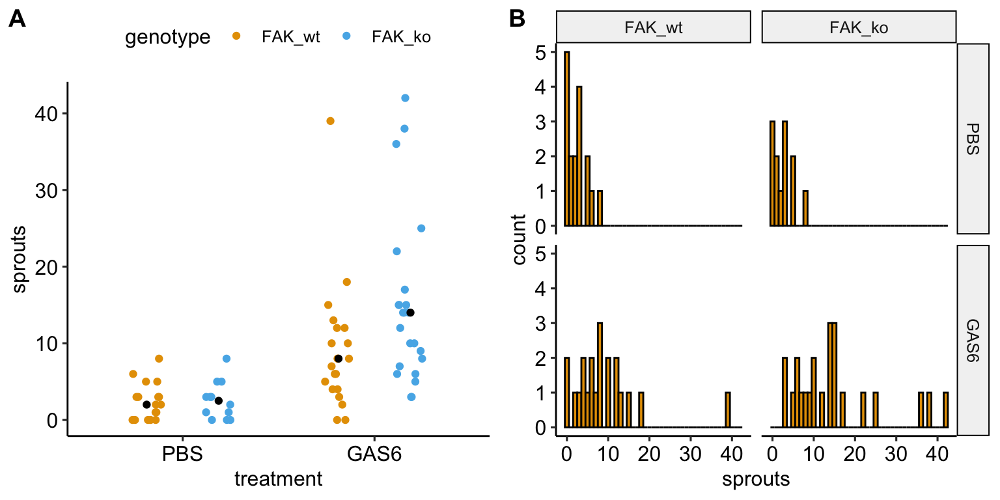
15 Linear models for counts, binary responses, skewed responses, and proportions – Generalized Linear Models
15.1 Introducing Generalized Linear Models using count data examples
Biologists frequently count stuff, and design experiments to estimate the effects of different factors on these counts. Count data can cause numerous problems with linear models that assume a normal, conditional distribution, including 1) counts are discrete, and can be zero or positive integers only, 2) counts tend to bunch up on the small side of the range and spread thinly on the large side of the range, creating a distribution with a positive skew, 3) a sample of counts can have an abundance of zeros, and 4) the variance of counts increases with the mean (see Figure 15.1 for some of these properties). Some count data can be approximated by and reasonably modeled with a normal distribution. More often, count data should modeled with a Quasipoisson distribution or Negative Binomial distribution using a generalized linear model. Quasipoisson and Negative Binomial distributions are discrete probability distributions with two important properties: 1) the distribution contains only zeros and positive integers and 2) the variance is a function of the mean. Back before modern computing and fast processors, count data were often analyzed by either transforming the response or by non-parametric hypothesis tests. One reason to prefer a statistical modeling approach with a GLM is that we can get interpretable parameter estimates better behaved error intervals.
15.1.1 The Generalized Linear Model (GLM)
As outlined in Two specifications of a linear model, a common way that biological researchers are taught to think about a response variable is
\[ response = expected + error \]
or, using the notation of this text,
\[ \begin{align} y &= \beta_0 + \beta_1 \texttt{treatment} + \varepsilon \\ \varepsilon &\sim \operatorname{Normal}(0, \sigma^2) \end{align} \tag{15.1}\]
That is, we can think of a response as the sum of some systematic part (\(\beta_0 + \beta_1 \texttt{treatment}\)) and a stochastic (“random error”) part (\(\varepsilon\)), where the stochastic part is a random draw from a normal distribution with mean zero and variance \(\sigma^2\). This way of thinking about the generation of the response is useful for linear models, and model checking linear models, but is much less useful for thinking about generalized linear models or model checking generalized liner models. For example, if we want to model the number of angiogenic sprouts in response to some combination of \(\texttt{genotype}\) and \(\texttt{treatment}\) using a Quasipoisson distribution, the following is the wrong way to think about the statistical model
\[ \begin{align} \texttt{sprouts} &= \beta_0 + \\ &\quad \ \beta_1 \texttt{treatment}_{\texttt{GAS6}} \ + \\ &\quad \ \beta_2 \texttt{genotype}_{\texttt{FAK\_ko}} + \\ &\quad \ \beta_3 \texttt{treatment}_{\texttt{GAS6}}:\texttt{genotype}_{\texttt{FAK\_ko}} + \\ &\quad \ \varepsilon_i \\ \varepsilon &\sim \ \operatorname{Quasipoisson}(\mu, \theta) \end{align} \tag{15.2}\]
That is, we should not think of a count as the sum of a systematic part and a random draw from a Poisson distribution. Why? Because it is the counts, conditional on the \(\texttt{treatmentgenotype}\) combination that are quasipoisson distributed, not the residuals from the fit model. A residual is a difference from a mean, so, some residuals from a fit model have to be negative. A negative residual cannot be a sample from a quasipoisson or Negative Binomial distribution because these can only generate non-negative integers.
A better way to think about the data generation for a linear model that naturally leads to the correct way to think about data generation for a generalized linear model, is
\[ \begin{align} y &\sim N(\mu_{treatment}, \sigma^2) \\ \mathrm{E}(y| \texttt{treatment}) &= \mu_{treatment} \\ \mu_{treatment} &= \beta_0 + \beta_1 \texttt{treatment} \end{align} \tag{15.3}\]
That is, a response is a random draw from a normal distribution with mean \(mu\) (not zero!) and variance \(\sigma^2\). Line 1 is the stochastic part of this specification. Line 3 is the systematic part. Line 2 simply states that the expectation, conditional on the treatment, is the treatment mean.
The specification of a generalized linear model has both stochastic and systematic parts but adds a third part, which is a link function connecting the stochastic and systematic parts.
The stochastic part, which is a probability distribution from the exponential family (this is sometimes called the “random part”) \[ \begin{equation} y \sim \operatorname{Prob}(\mu_{treatment}) \end{equation} \]
the systematic part, which is a linear predictor (I like to think about this as the deterministic part)
\[ \begin{equation} \eta = \beta_0 + \beta_1 \texttt{treatment} \end{equation} \]
- a link function connecting the two parts
\[ \begin{equation} \eta_{treatment} = g(\mu_{treatment}) \end{equation} \]
\(\mu_{treatment}\) (the Greek symbol mu) is the true, conditional (treatment) mean (or expectation \(\mathrm{E}(Y|X)\)) of the response on the response scale and \(\eta_{treatment}\) (the Greek symbol eta) is the true, conditional (treatment) mean of the response on the link scale. The response scale is the scale of the raw measurements and has units of the raw measurements. The link scale is the scale of the transformed mean. A GLM models the response with a distribution specified in the stochastic part. The probability distributions introduced in this chapter are the Poisson and Negative Binomial. The natural link function, and default link function in R, for the Poisson and Negative Binomial is the “log link”, \(\eta = log(\mu)\). More generally, while each distribution has a natural (or, “canonical”) link function, one can use alternatives. Given this definition of a generalized linear model, a linear model is a GLM with a normal distribution and an Identity link (\(\eta = \mu\)).
\[ \begin{align} y &\sim \operatorname{Normal}(\mu_{treatment}, \sigma^2)\\ \mathrm{E}(y | \texttt{treatment}) &= \mu_{treatment}\\ \eta &= \beta_0 + \beta_1 \texttt{treatment}\\ \mu_{treatment} &= \eta_{treatment} \end{align} \]
Think about the link function and GLM more generally like this: the GLM constructs a linear model that predicts the conditional means on the link scale. If the model uses a “log link” then the conditional mean on the link scale is the log of the conditional mean on the response scale. The modeled mean on the response scale is the inverse link function, or
\[ \begin{equation} \mu_{treatment} = g^{-1}(\eta_{treatment}) \end{equation} \]
For a log link, a true, treatment mean is \(\mu_{treatment} = \mathrm{exp}(\eta_{treatment})\)) (\(\mathrm{exp}\) is the exponential function which is the inverse of the natural log ln(x)).
Importantly, in a GLM, the individual data values are not transformed. A GLM with a log link is not the same as a linear model on log transformed data.
When modeling counts using the Quasipoisson or Negative Binomial distributions with a log link, the link scale is linear, and so the effects are additive on the link scale, while the response scale is nonlinear (it is the exponent of the link scale), and so the effects are multiplicative on the response scale. If this doesn’t make sense now, an example is worked out below. The inverse of the link function backtransforms the parameters from the link scale back to the response scale. So, for example, a prediction on the response sale is \(\mathrm{exp}(\hat{\eta})\) and a coefficient on the response scale is \(\mathrm{exp}(b_j)\).
15.1.2 Kinds of data that are modeled by a GLM
- If a response is a count then use a Poisson, quasi-Poisson or Negative Binomial family with a log link.
- If a response is binary response, for example, presence/absence or success/failure or survive/die, then use the binomial family with a logistic link (other link functions are also useful). This is classically known as logistic regression.
- If a response is a fraction that is a ratio of counts, for example the fraction of total cells that express some marker, then use the binomial family with a logistic link. Think of each count as a “success”.
- If a response is a fraction of counts per “effort” (cells per area or volume or time), then use a Poisson, quasi-Poisson or Negative Binomial family with a log link on the raw count and include the measure of effort as an offset.
- If a response is continuous but the variance increases with mean then use the gamma family
- If a response is a fraction of a continuous measure per “effort” (tumor area per total area or volume or time), then use a gamma family on the raw measure and include the measure of effort as an offset.
15.2 Example 1 – GLM models for count responses (“angiogenic sprouts” fig3a)
15.2.1 Understand the data
The researchers designed a set of experiments to investigate the effects of pericyte derived FAK (focal adhesion kinase, a protein tyrosine kinase) on the Gas6/Axl pathway regulating angiogenesis promoting tumor growth. Pericytes are cells immediately deep to the endothelium (the epithelial lining) of the smallest blood vessels, including capillaries, arterioles, and venules. Angiogenesis is the growth of new blood vessels. GAS6 (growth arrest specific 6) is a protein commonly expressed in tumors.
The example data is from the experiment for Figure 3a. The design is \(2 \times 2\) – two factors (\(\texttt{treatment}\) and \(\texttt{genotype}\)) each with two levels.
- Factor 1: \(\texttt{treatment}\)
- reference level: “PBS”. Phosphate buffered saline added to tissue. This is the control treatment.
- treatment level: “GAS6”. Added to tissue in solution. The experiment is designed to test its effect on promoting angiogenesis in the development of tumors.
- Factor 2: \(\texttt{genotype}\)
- reference level: “FAK_wt”. The functional genotype.
- treatment level: “FAK_ko”. Tissue-specific FAK deletion in pericytes. The experiment is designed to test the effect of pericyte-derived FAK on slowing angiogenesis in the development of tumors. If true, then its deletion should result in increased tumor development.
The four treatment by genotype combinations are
- Control (“PBS FAK_wt”) – negative control
- FAK_ko (“PBS FAK_ko”) – PBS control. Unknown response given deletion of putative angiogenesis inhibitor but no added putative angiogenesis promotor
- GAS6 (“GAS6 FAK_wt”) – GAS6 control. GAS6 expected to promote angiogenesis but this the response is expected to be inhibited by some amount by FAK
- GAS6+FAK_ko (“GAS6 FAK_ko”) – focal treatment. Expected positive angiogenesis
The planned contrasts are
- (PBS FAK_ko) - (PBS FAK_wt) – the effect of FAK deletion given the control treatment
- (GAS6 FAK_ko) - (GAS6 FAK_wt) – the effect of FAK deletion given the GAS6 treatment
- ((PBS FAK_ko) - (PBS FAK_wt)) - ((GAS6 FAK_ko) - (GAS6 FAK_wt)). The interaction effect giving the effect of the combined treatment relative to the individual effects.
15.2.2 Model fit and inference
15.2.2.1 Fit the models
fig3a_lm <- lm(sprouts ~ treatment * genotype, data = fig3a)
fig3a_pois <- glm(sprouts ~ treatment * genotype,
family = poisson(link = "log"),
data = fig3a)
fig3a_qp <- glm(sprouts ~ treatment * genotype,
family = quasipoisson(link = "log"),
data = fig3a)
fig3a_nb <- glm.nb(sprouts ~ treatment * genotype,
data = fig3a)Notes on the models
- The Poisson almost never (ever?) fits bench biological data well. I’m using it here to show this with the model check.
- The Quasipoisson and Negative Binomial distributions tend to fit biological data well and are similare to each other. I find that QP improves test performance in simulations, so prefer it for statistical inference. Unfortunately, the Quasipoisson is not implemented in the model check functions.
15.2.2.2 Check the models
15.2.2.2.1 Check the linear model
ggcheck_the_model(fig3a_lm)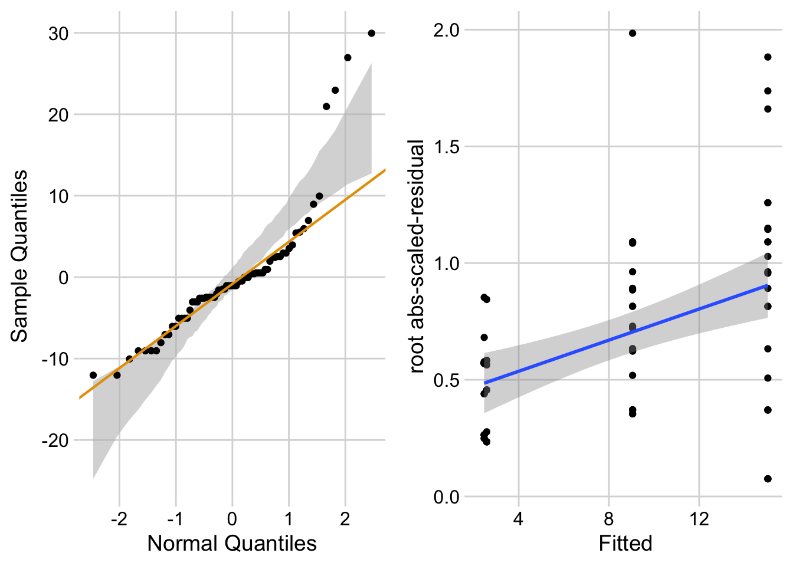
Notes
- left panel shows classic right skew conditional distribution with less negative quantiles than expected with a normal distribution on the left hand side and more positive quantiles than expected on the right hand side.
- right panel shows heterogeneity and specifically the variance increasing with the mean.
15.2.2.2.2 Check the poisson model
Check shape and homogeneity
# from the DHARMa package
fig3a_pois_check <- simulateResiduals(fittedModel = fig3a_pois, n = 250)
plot(fig3a_pois_check, asFactor = FALSE)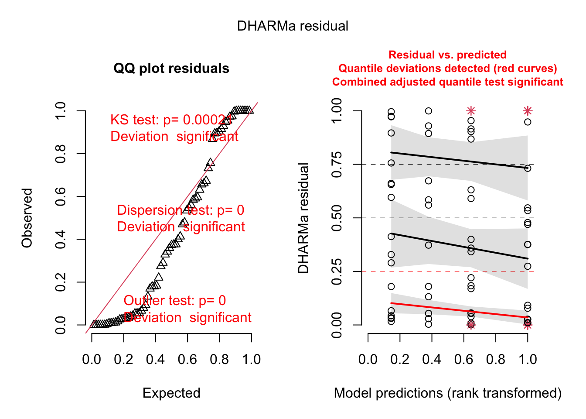
Notes
- poisson glm fails to generated scaled residuals approximating uniform distribution.
Check dispersion
fig3a_pois_check_refit <- simulateResiduals(fittedModel = fig3a_pois,
n = 250,
refit = TRUE)
fig3a_pois_test_dispersion <- testDispersion(fig3a_pois_check_refit)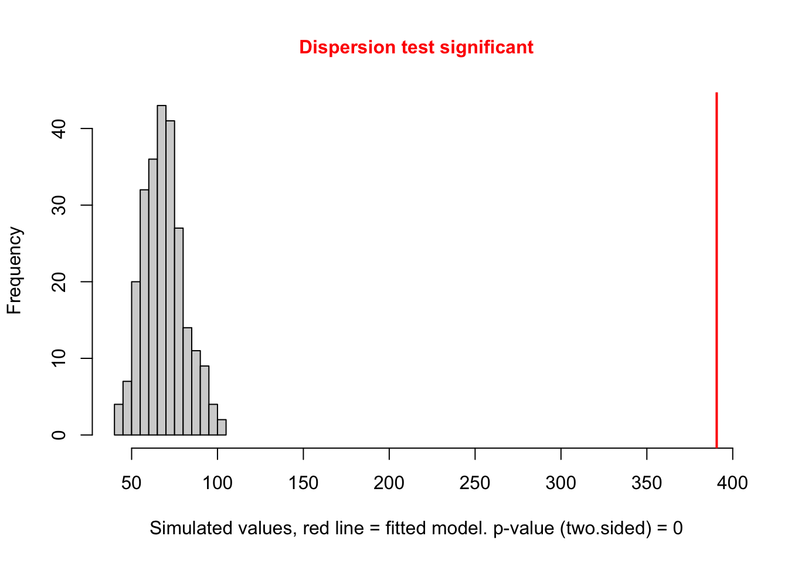
Notes
- large overdispersion
Check zero inflation
fig3a_pois_test_zi <- testZeroInflation(fig3a_pois_check_refit)
Notes
- The data has too many zeros relative to the expected number from a poisson GLM.
15.2.2.2.3 Check the Negative Binomial model
Check shape and homogeneity
# from the DHARMa package
fig3a_nb_check <- simulateResiduals(fittedModel = fig3a_nb,
n = 250)
plot(fig3a_nb_check, asFactor = FALSE)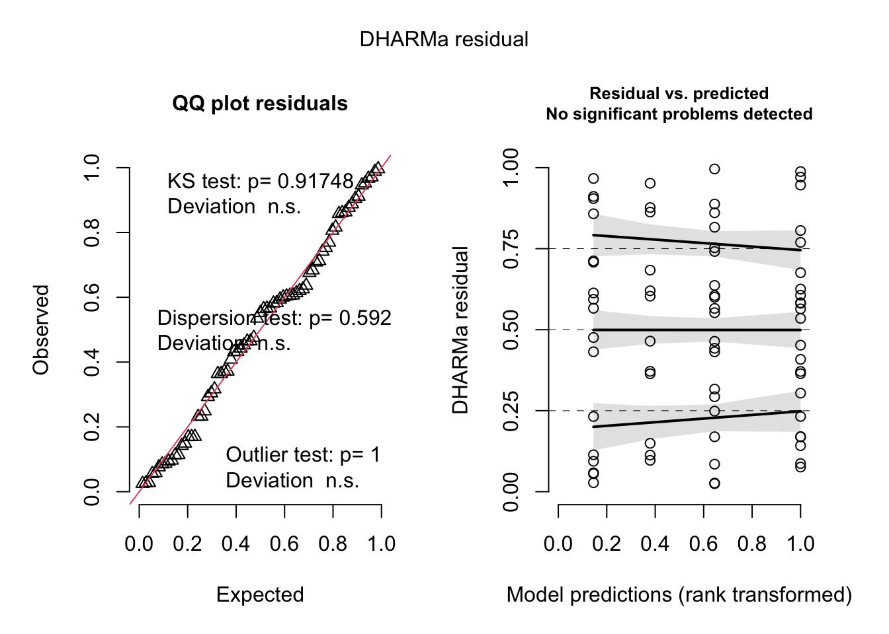
Notes
- uniform q-q for Negative Binomial GLM looks good.
- spread-location plot looks good.
Check dispersion
fig3a_nb_check_refit <- simulateResiduals(fittedModel = fig3a_nb,
n = 250,
refit = TRUE)
fig3a_nb_test_dispersion <- testDispersion(fig3a_nb_check_refit)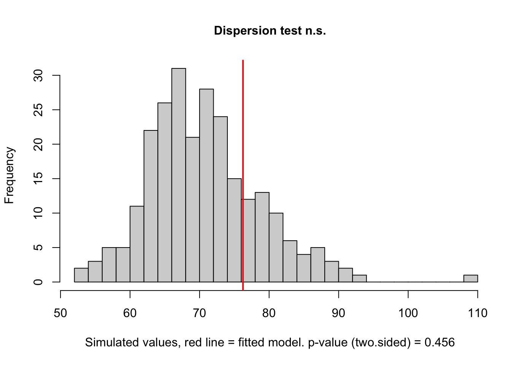
Notes
- good
Check zero inflation
fig3a_nb_test_zi <- testZeroInflation(fig3a_nb_check_refit)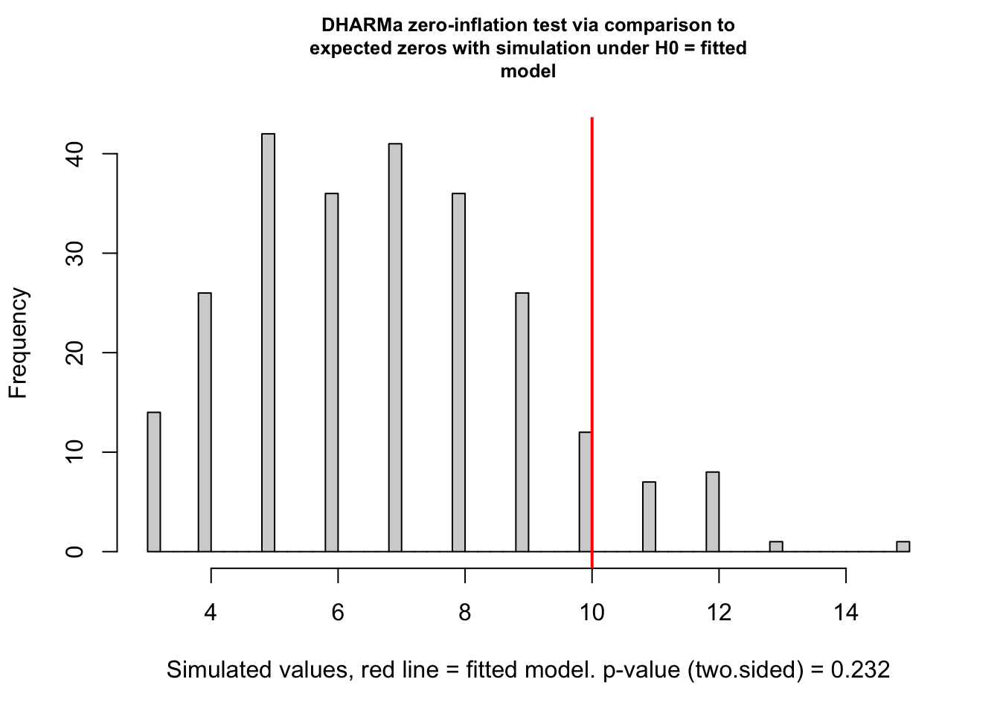
15.2.2.3 Inference from the model
fig3a_nb_coef <- cbind(coef(summary(fig3a_nb)),
confint(fig3a_nb))| Estimate | Std. Error | z value | Pr(>|z|) | 2.5 % | 97.5 % | |
|---|---|---|---|---|---|---|
| (Intercept) | 0.90 | 0.231 | 3.9 | 0.000 | 0.45 | 1.36 |
| treatmentGAS6 | 1.30 | 0.287 | 4.5 | 0.000 | 0.74 | 1.86 |
| genotypeFAK_ko | 0.04 | 0.357 | 0.1 | 0.900 | -0.65 | 0.75 |
| treatmentGAS6:genotypeFAK_ko | 0.46 | 0.425 | 1.1 | 0.275 | -0.37 | 1.30 |
fig3a_nb_emm <- emmeans(fig3a_nb,
specs = c("treatment", "genotype"),
type="response")| treatment | genotype | response | SE | df | asymp.LCL | asymp.UCL |
|---|---|---|---|---|---|---|
| PBS | FAK_wt | 2.47 | 0.6 | Inf | 1.57 | 3.88 |
| GAS6 | FAK_wt | 9.05 | 1.5 | Inf | 6.48 | 12.64 |
| PBS | FAK_ko | 2.58 | 0.7 | Inf | 1.52 | 4.40 |
| GAS6 | FAK_ko | 15.04 | 2.4 | Inf | 11.06 | 20.46 |
# fig3a_nb_emm # print in console to get row numbers
# set the mean as the row number from the emmeans table
pbs_fak_wt <- c(1,0,0,0)
gas6_fak_wt <- c(0,1,0,0)
pbs_fak_ko <- c(0,0,1,0)
gas6_fak_ko <- c(0,0,0,1)
#1. (PBS FAK_ko) - (PBS FAK_wt)
#2. (GAS6 FAK_ko) - (GAS6 FAK_wt)
#3. ((PBS FAK_ko) - (PBS FAK_wt)) - (GAS6 FAK_ko) - (GAS6 FAK_wt).
fig3a_nb_planned <- contrast(
fig3a_nb_emm,
method = list(
"(PBS FAK_ko) - (PBS FAK_wt)" = c(pbs_fak_ko - pbs_fak_wt),
"(GAS6 FAK_ko) - (GAS6 FAK_wt)" = c(gas6_fak_ko - gas6_fak_wt),
"Interaction" = c(gas6_fak_ko - gas6_fak_wt) -
c(pbs_fak_ko - pbs_fak_wt)
),
adjust = "none"
) %>%
summary(infer = TRUE)| contrast | ratio | SE | df | asymp.LCL | asymp.UCL | null | z.ratio | p.value |
|---|---|---|---|---|---|---|---|---|
| (PBS FAK_ko) / (PBS FAK_wt) | 1.05 | 0.373 | Inf | 0.52 | 2.10 | 1 | 0.12516 | 0.9 |
| (GAS6 FAK_ko) / (GAS6 FAK_wt) | 1.66 | 0.385 | Inf | 1.06 | 2.62 | 1 | 2.19446 | 0.0 |
| Interaction | 1.59 | 0.676 | Inf | 0.69 | 3.66 | 1 | 1.09082 | 0.3 |
Notes
- The df are infinite and the confidence limits are “asymptotic”. In the strict sense, this means that inference assumes that the sample size is infinite. But less strictly, inference assumes a large sample. The smaller the sample, the more optimistic (liberal) the inference. In general, experimental bench biology datasets are small and so asymptotic CIs and p-values will be liberal (increasing false discovery).
15.2.2.4 Plot the model
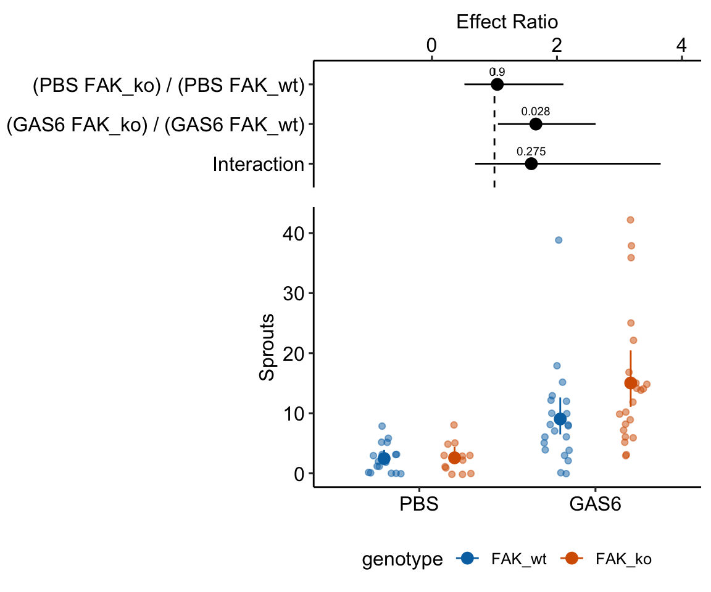
Notes
- The CIs of the means and of the effects are asymmetric – the bar on the higher side is longer. This asymmetry reflects the skewed right distribution.
- The effect is a ratio (the non-reference response as a multiple of the reference response) and not a difference. This effect is the number of times larger (if greater than 1) or fraction smaller (if less than one).
15.2.2.5 Alternaplot the model
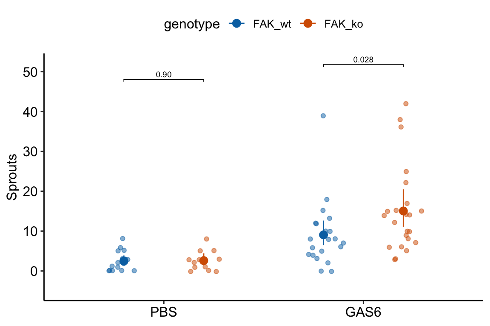
15.3 Understanding Example 1
15.3.1 Modeling strategy
Instead of testing assumptions of a model using formal hypothesis tests before fitting the model, a better strategy is to 1) fit one or more models based on initial evaluation of the data, and then do 2) model checking using diagnostic plots, diagnostic statistics, and simulation (see Section All statistical analyses should be followed by model checking).
For the fig3a data, I fit a linear model, a Poisson GLM, and a Negative Binomial GLM. I use the diagnostic plots and statistics to help me decide which model to report.
15.3.2 Model checking fits to count data
We use the fit models to check
- the compatibility between the quantiles of the observed residuals and the distribution of expected quantiles from the family in the model fit
- if the observed distribution is over or under dispersed
- if there are more zeros than expected by the theoretical distribution. If so, the observed distribution is zero-inflated
15.3.2.1 Checking the linear model fig3a_lm – a Normal-QQ plot
Figure 15.4 A shows a histogram of the residuals from the fit linear model. The plot shows that the residuals seem to be clumped at the negative end of the range, which suggests that a model with a normally distributed conditional outcome (or normal error) is not well approximated.
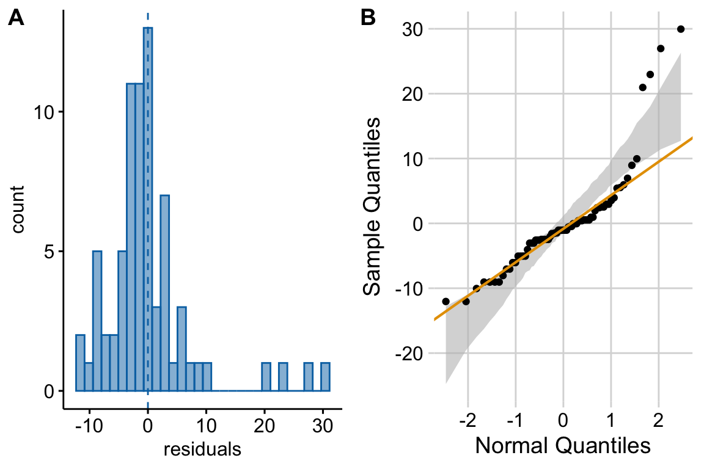
A better way to investigate this is with the Normal-QQ plot in Figure 15.4 B, which plots the sample quantiles for a variable against their theoretical quantiles. If the conditional outcome approximates a sample from normal distribution,
- the points should roughly follow the robust regression line,
- the points should be largely inside the 95% CI (gray) bounds for sampling a normal distribution with the variance estimated by the model, and
- the robust regression line should be largely inside the CI bounds.
For the sprout data, the points are above the line at the positive end, hug the upper bound of the 95% CI at the negative end, are well above the 95% CI at the positive end, and the robust regression is distinctly shallower than a line bisecting the CI bounds. At the left (negative) end, the observed values are more positive than the theoretical values. Remembering that this plot is of residuals, if we think about this as counts, this means that our smallest counts are not as small as we would expect given the mean, the variance, and a normal distribution. This shouldn’t be surprising – the counts range down to zero and counts cannot be below zero. At the positive end, the sample values are again more positive than the theoretical values. Thinking about this as counts, this means that largest counts are larger than expected given the mean, the variance, and a normal distribution. This pattern is what we’d expect of count data.
15.3.2.2 Checking the linear model fig3a_lm – Spread-level plot for checking homoskedasticity
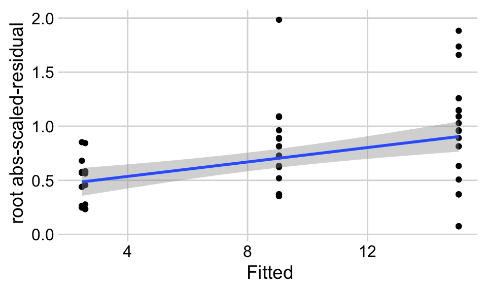
A linear model also assumes that the error is homoskedastic – the error variance is not a function of the value of the \(X\) variables). Non-homoskedastic error is heteroskedastic. I will typically use “homogenous variance” and “heterogenous variance” since these terms are more familiar to biologists. The fit model can be checked for homogeneity using a spread-level (also known as a scale-location) plot, which comes in several forms. I like a spread-level plot that is a scatterplot of the positive square-root of the standardized residuals against the fitted values (remember that the fitted values are the values computed by the linear predictor of the model – they are the “predicted values” of the observed data). If the conditional outcome approximates samples from distributions with the same variance, then,
- the regression line through the scatter should be close to horizontal.
- the grey bounds on the regression line shouldn’t be tilted up more than expected. This means the bottom of the grey bound on the right-hand side shouldn’t be above the top end of the grey bound on the left-hand side.
The regression line in the spread-level plot of the fit of the linear model to the sprout data shows a distinct increase in the “scale” (the square root of the standardized residuals) with increased fitted value, which is expected of data sampled from a distribution in which the variance increases with the mean.
15.3.2.3 Three distributions for count data – Poisson, Negative Binomial, and Quasipoisson
The patterns in the Normal Q-Q plot (Figure 15.4) and the spread-level plot (Figure 15.5) should discourage a researcher from modeling the data with a linear model and instead model the data with an alternative distribution using a Generalized Linear Model. There is no unique mapping between observed data and a data generating mechanism with a specific distribution, so this decision is not as easy as thinking about the data generation mechanism and then simply choosing the “correct” distribution. Section 4.5 in Bolker (xxx) is an excellent summary of how to think about the generating processes for different distributions in the context of ecological data. Since the response in the angiogenic sprouts data are counts, we need to choose a distribution that generates integer values, such as the Poisson, the Quasipoisson, and the Negative Binomial.
- Poisson – A Poisson distribution is the probability distribution of the number of occurrences of some thing (a white blood cell, a tumor, or a specific mRNA transcript) generated by a process that generates the thing at a constant rate per unit effort (duration or space). This constant rate is the parameter \(\lambda\), which is the expectation (the expected mean of the counts), so \(\mathrm{E}(Y) = \mu = \lambda\). Because the rate per effort is constant, the variance of a Poisson variable equals the mean, \(\sigma^2 = \mu = \lambda\). Figure @ref(fig:glm1-poisson) shows three samples from a Poisson distribution with \(\lambda\) set to 1, 5, and 10. The plots show that, as the mean count (\(\lambda\)) moves away from zero, a Poisson distribution 1) becomes less skewed and more closely approximates a normal distribution and 2) has an increasingly low probability of including zero (less than 1% zeros when the mean is 5).
A Poisson distribution, then, is useful for count data in which the conditional variance is close to the conditional mean. Very often, biological count data are not well approximated by a Poisson distribution because the variance is either less than the mean, an example of underdispersion1, or greater than the mean, an example of overdispersion2. A useful distribution for count data with overdispersion is the Negative Binomial.

- Negative Binomial – The Negative Binomial distribution is a discrete probability distribution of the number of successes that occur before a specified number of failures \(k\) given a probability p of success. This isn’t a very useful way of thinking about modeling count data in biology. What is useful is that the Negative Binomial distribution can be used simply as way of modeling an “overdispersed” Poisson process. Using the parameterization in the
MASS::glm.nbfunction, the mean of a Negative Binomial variable is \(\mu\) and the variance is \(\sigma^2 = \mu + \frac{\mu^2}{\theta}\). As a method for modeling an overdispersed Poisson variable, \(\theta\) functions as a **dispersion parameter* controlling the amount of overdispersion and can be any real, positive value (not simply a positive integer), including values less than 1. As \(\theta\) approaches positive infinity, the “overdispersion” bit \(\frac{\mu^2}{\theta}\) goes to zero and the variance goes to \(\mu\), which is the same as the Poisson.

- Quasipoisson – The Quasipoisson distribution is similar to the NB distribution in that it models overdispersion, which occurs when the variance increases faster than the mean. In the NB, the overdispersion parameter \(\theta\) is a function of the mean which makes the variance increase with the square of the mean. In the QP, the overdispersion parameter \(\theta\) is not a function of the mean, so the variance increases linearly with the mean.
NB1 vs NB2 in the glmmTMB package
The glmmTMB package is a wicked-useful update of the base R glm functions. The glmmTMB package treats the Quasipoisson and the Negative Binomial as two versions of a Negative Binomial distribution and uses the notation:
- NB1 – the variance increases linearly with the mean, so this is a Quasipoisson fit. Think “1 = linear”.
- NB2 – the variance is a quadratic of the mean, so this is the classic Negative Binomial fit. Think “2 = quadratic”.
15.3.2.4 Model checking a GLM I – the quantile-residual uniform-QQ plot
Normal-QQ plots were introduced in Section @ref{normal-qq} of the Model Checking chapter and applied to the linear model fit of the angiogenic sprout data in Section @ref(glm-fig3a-normal-qq) above. We cannot use a Normal-QQ plot with a Poisson or Negative Binomial GLM fit because the residuals from this fit are not expected to be normally distributed. An alternative to a Normal-QQ plot for a GLM fit is a quantile-residual uniform-QQ plot of observed quantile residuals.

Notes
- The x-axis (“Expected”) contains the expected quantiles from a uniform distribution.
- The y-axis (“Observed”) contains the observed quantile residuals from a GLM fit, which are the residuals from the fit model that are transformed in a way that the expected distribution is uniform under the fit model family. This means that we’d expect the quantile residuals to closely approximate the expected quantiles from a uniform distribution. If the approximation is close, the points will fall along the “y = x” line in the plot.
- The gray shaded area is a 95% confidence interval computed using a parametric bootstrap. At any value of the expected quantile, the interval will include an observed quantile 95% of the time. This gray area gives us a sense of the variability we’d get when we fit models to random samples from the specified model.
- In the quantile-residual QQ plot for Model
fig3a_pois, the observed residuals are far outside the 95% boundary. The observed residuals are smaller than expected at the negative (left) end and larger than expected at the right (high) end. This means the residuals are more spread out than expected for a Poisson sample. The data are overdispersed for this model. Understand that overdispersion is not a property of data but of the residuals from a specific model fit to the data.
Misconceivable – A common misconception is that if the distribution of the response approximates a Poisson distribution, then the residuals of a GLM fit with a Poisson distribution should be normally distributed, which could then be checked with a Normal-QQ plot, and homoskedastic, which could be checked with a scale-location plot. Neither of these is true because a GLM does not transform the data and, in fact, the model definition does not specify anything about the distribution of an “error” term – there is no \(\varepsilon\) in the model definition above! This is why thinking about the definition of a linear model by specifying an error term with a normal distribution can be confusing and lead to misconceptions when learning GLMs.
15.3.2.5 Model checking a GLM II – Spread-level plot for checking homoskedasticity

Notes
- The three curves are quantile regressions fit to the 25% (the first quartile), 50% (the second quartile or median), and 75% (the third quartile) quantiles conditional on the fitted value (the x-axis). The \(p\%\) quantile regression line goes through the \(p\%\) quantile of the \(Y\) values at each value of \(X\). Think of it like this: at any location along the x-axis, there is a spread of points on the y-axis that contains a first quartile, a median, and a third quartile. The 25%, 50%, and 75% quantile regression lines go through these points.
- Why fit the three quartiles? The classic spread-level plot typically fits a regression, which is the expected (mean) residual, conditional on the fitted value (for example, the plot in Figure 15.5). Researchers typically look at this and think, “the whole spread of points is becoming more variable as the fitted value increases” but the regression is only modeling the mean. By fitting the first, second, and third quartile regressions, this spread-level plot evaluates deviations from expected spread not just at the mean but in the lower and upper halves of the spread.
15.3.2.6 Model checking a GLM III – Checking dispersion

Notes
- This plot is a histogram of the sum of squared Pearson residuals of fake data sampled from the fit model. Pearson residuals are the raw residuals divided by the square root of the fitted value. Remember that in the Poisson distribution, the variance is equal to the expectation (mean), so a Pearson residual is the raw residual divided by the standard deviation of the residual. A way to think about this is, Pearson residuals “correct” for the heterogeneity in variance that arises among groups with different mean counts.
- The sum of squared Pearson residuals is a measure of the dispersion of the residuals.
- The red line is the observed sum of the squared Pearson residuals of the fit model.
- If the observed dispersion approximates that expected from sampling from the fit model, the red line will be within the histogram.
- The red line here is far larger than expected given the histogram, which indicates that the residuals are overdispersed given the fit model.
- Overdispersion will be common with Poisson GLM fits to biological data.
15.3.2.7 Model Checking a count GLM – Check zero inflation
Counts can have the value zero. Data that have more zeros than expected given a fit count GLM model (Poisson, quasi-Poisson, Negative Binomial) is zero-inflated.
zero_inflation_test <- testZeroInflation(simulation_output)
- This plot is a histogram of the number of zeros in each of the fake data sets generated by the fit model. An observed number of zeros at the extremes of this distribution are unlikely given the fit model. The number of zeros in the observed data is greater than expected by the model.
15.3.3 Biological count data are rarely fit well by a Poisson GLM. Instead, fit a quasi-poisson or Negative Binomial GLM model.
Here are the diagnostic plots of the Negative Binomial GLM fit to the fig3a data


15.3.4 A GLM is a linear model on the link scale
The negative-binomial GLM fit to the angiogenic sprout data (fig3a) is
\[ \begin{align} \texttt{sprouts}_i &\sim \operatorname{NB}(\mu_i, \theta)\\ \mathrm{E}(\texttt{sprouts}\ | \ \texttt{treatment, genotype}) &= \mu\\ \mu_i &= \mathrm{exp}(\eta_i)\\ \eta_i &= \beta_0 \ + \\ & \quad \; \beta_1 \texttt{treatment}_{\texttt{GAS6}} \ + \\ & \quad \; \beta_2 \texttt{genotype}_{\texttt{FAK_ko}} \ + \\ & \quad \; \beta_3 \texttt{treatment}_{\texttt{GAS6}}:\texttt{genotype}_{\texttt{FAK_ko}} (\#eq:nb-glm-fig3a) \end{align} \]
- The first line of Model @ref(eq:nb-glm-fig3a) is the stochastic part stating the response is modeled as a random Negative Binomial variable with conditional mean \(\mu_i\), and variance \(\mu + \frac{\mu^2}{\theta}\). Fitting the model to the data estimates \(\mu_i\) for all i. \(\mu_i\) will be the same for all mice within each treatment by genotype combination because they share the same conditions (the values of the indicator variables for treatment, genotype, and their interaction).
- The second line states the \(\mu\) is the mean conditional on the value of \(\texttt{treatment}\) and \(\texttt{genotype}\)
- The third line connects the conditional mean on the link scale (\(\eta\)) with the conditional mean on the response scale (\(\mu\)). This is the backtransformation.
- The fourth line is the linear predictor – it is a linear model on the link scale. The linear predictor includes three indicator variables.
- Remember that a linear model is a model in which the coefficients are additive, meaning that the coefficients do not have exponents or are not multiplied by each other.
15.3.5 Coeffecients of a Generalized Linear Model with a log-link function are on the link scale.
The coefficients of the fit Negative Binomial model are
| Estimate | Std. Error | z value | Pr(>|z|) | 2.5 % | 97.5 % | |
|---|---|---|---|---|---|---|
| (Intercept) | 0.90446 | 0.231 | 3.9 | 0.000 | 0.45 | 1.36 |
| treatmentGAS6 | 1.29805 | 0.287 | 4.5 | 0.000 | 0.74 | 1.86 |
| genotypeFAK_ko | 0.04462 | 0.357 | 0.1 | 0.900 | -0.65 | 0.75 |
| treatmentGAS6:genotypeFAK_ko | 0.46382 | 0.425 | 1.1 | 0.275 | -0.37 | 1.30 |
Notes
- The coefficients are on the link scale, which is a linear (additive) scale.
15.3.5.1 The intercept of a Generalized Linear Model with a log-link function is the mean of the reference on the link scale
- In the linear model
fig3a_lm, the intercept is the modeled mean of the reference group. In a GLM with a log-link (including Modelsfig3a_poisandfig3a_nb), the intercept is the mean of the reference group on the link scale. The modeled mean of the reference on the response scale is computed by the backtransformaiton \(\exp(b_1)\). The function “exp(x)” is the exponent, which is often written using the notation \(e^{x}\). - The transformation between link scale and response scale is part of the specification of a Generalized Linear Model. For the Negative Binomial GLM fit to the fig3a data, this specification is in line 3 of the specification (Model @ref(eq:nb-glm-fig3a)).
Compare the computation here with the modeled mean in the emmeans table (Section @ref(glm-fig3a-m3-inference) or with a computation of the sample mean.
b1 <- coef(fig3a_nb)[1]
exp(b1)(Intercept)
2.470588 mean(fig3a[t_by_g == "PBS FAK_wt", sprouts])[1] 2.47058815.3.5.2 The coefficients of the indicator variables of a Generalized Linear Model with a log-link function are effect-ratios on the response scale
- In the linear model
fig3a_lm, the coefficient of an indicator variable is a difference in means. In a GLM with a log-link, the coefficient of an indicator variable is the difference (group minus reference) of the modeled means on the link scale. Let’s check this with some computations.
The modeled means on the link scale are in the emmeans table
fig3a_nb_emm_link <- emmeans(fig3a_nb,
specs = c("treatment", "genotype")) %>%
summary() %>%
data.table()Using this table, the difference between the link-scale mean of “GAS6 FAK_wt” and “PBS FAK_wt” (the reference) is
fig3a_nb_emm_link[treatment == "GAS6" &
genotype == "FAK_wt", emmean] -
fig3a_nb_emm_link[treatment == "PBS" & genotype == "FAK_wt", emmean][1] 1.298045And the coefficient for the \(\texttt{treatment_gas6}\) indicator variable is
# coefficient for treatment_gas6
b2 <- coef(fig3a_nb)[2]
b2treatmentGAS6
1.298045 - In a GLM with a log-link, the exponent of the coefficient of an indicator variable is the ratio of the modeled means on the response scale. Let’s check this with some computations.
The modeled means on the response scale are in the emmeans table
fig3a_nb_emm_response <- emmeans(fig3a_nb,
specs = c("treatment", "genotype"),
type = "response") %>%
summary() %>%
data.table()Using this table, the ratio of the response-scale mean of “GAS6 FAK_wt” to the response-scale mean of “PBS FAK_wt” (the reference) is
fig3a_nb_emm_response[treatment == "GAS6" &
genotype == "FAK_wt", response]/
fig3a_nb_emm_response[treatment == "PBS" & genotype == "FAK_wt", response][1] 3.662132And the coefficient for the \(\texttt{treatment_gas6}\) indicator variable backtransformed to the response scale is
exp_b2 <- exp(b2)
exp_b2treatmentGAS6
3.662132 - Since this backtransformed coefficient is both an effect and a ratio, I call it an effect ratio. It’s value is how many times bigger (or smaller if less than one) the non-reference response is relative to the reference response. The response of the GAS6 treatment is 3.66\(\times\) that of the reference treatment.
15.3.6 Modeled means in the emmeans table of a Generalized Linear Model can be on the link scale or response scale – Report the response scale
15.3.6.1 The emmeans table on the link scale contains the log means
| treatment | genotype | emmean | SE | df | asymp.LCL | asymp.UCL |
|---|---|---|---|---|---|---|
| PBS | FAK_wt | 0.90446 | 0.23 | Inf | 0.45 | 1.36 |
| GAS6 | FAK_wt | 2.20250 | 0.17 | Inf | 1.87 | 2.54 |
| PBS | FAK_ko | 0.94908 | 0.27 | Inf | 0.42 | 1.48 |
| GAS6 | FAK_ko | 2.71094 | 0.16 | Inf | 2.40 | 3.02 |
- The values are the statistics on the link scale. The mean and CI, but not the SE, can be meaningfully backtransformed to the response scale using the exponent function to get the mean and CI on the response scale.
- The CIs are “asymptotic”, meaning they are computed using infinite degrees of freedom. The consequences is that the CIs will be too narrow, especially for small n.
- Check the math! Given asymptotic CIs, the lower CI should be (mean - 1.96 \(\times\) SE) and the upper should be (mean + 1.96 \(\times\) SE).
0.90446 - 1.96*0.23[1] 0.45366- A GLM is linear on the link scale. This means the model is additive on the link scale. Modeled means on the link scale are computed by adding the coefficients.
b <- coef(fig3a_nb) # the model coefficients
# the way I typically compute these
pbs_fak_wt_link <- b[1]
gas6_fak_wt_link <- b[1] + b[2]
pbs_fak_ko_link <- b[1] + b[3]
gas6_fak_ko_link <- b[1] + b[2] + b[3] + b[4]
# but this is the algebra more consistent with the linear model math
pbs_fak_wt_link <- b[1] + b[2]*0 + b[3]*0 + b[4]*0
gas6_fak_wt_link <- b[1] + b[2]*1 + b[3]*0 + b[4]*0
pbs_fak_ko_link <- b[1] + b[2]*0 + b[3]*1 + b[4]*0
gas6_fak_ko_link <- b[1] + b[2]*1 + b[3]*1 + b[4]*1
# combine into a table
fig3a_means <- data.table(
group = t_by_g_levels,
"mean (link scale)" = c(pbs_fak_wt_link,
gas6_fak_wt_link,
pbs_fak_ko_link,
gas6_fak_ko_link)
)| group | mean (link scale) |
|---|---|
| PBS FAK_wt | 0.90446 |
| GAS6 FAK_wt | 2.20250 |
| PBS FAK_ko | 0.94908 |
| GAS6 FAK_ko | 2.71094 |
Compare the values here to those in the emmeans table on the link scale (Table @ref(tab:fig3a_nb_emm_link)).
15.3.6.2 The emmeans table on the response scale contains more readily interpretable means
| treatment | genotype | response | SE | df | asymp.LCL | asymp.UCL |
|---|---|---|---|---|---|---|
| PBS | FAK_wt | 2.47059 | 0.57 | Inf | 1.57 | 3.88 |
| GAS6 | FAK_wt | 9.04762 | 1.54 | Inf | 6.48 | 12.64 |
| PBS | FAK_ko | 2.58333 | 0.70 | Inf | 1.52 | 4.40 |
| GAS6 | FAK_ko | 15.04348 | 2.36 | Inf | 11.06 | 20.46 |
- The values in the column “response” are the modeled means on the response scale. These values are the exponent of the values in the “emmean” column of the emmeans table on the link scale.
- The values in the columns “asymp.LCL” and “asymp.UCL” are the 95% confidence intervals on the response scale. These values are the exponent of the values in the same columns of the emmeans table on the link scale.
- Don’t do additive math on the response scale! Remember, a GLM is linear on the link scale. The CIs on the response scale are not the mean plus or minus 1.96 \(\times\) SE!
2.47059 - 1.96*0.57[1] 1.35339# oops- Modeled means on the response scale are computed by backtransforming the modeled means on the link scale. Since the fit model used a log-link, the backtransformation is the exponent.
pbs_fak_wt_response <- exp(pbs_fak_wt_link)
gas6_fak_wt_response <- exp(gas6_fak_wt_link)
pbs_fak_ko_response <- exp(pbs_fak_ko_link)
gas6_fak_ko_response <- exp(gas6_fak_ko_link)
# add a column to the fig3a_means data.table
fig3a_means[, "mean (response scale)" := c(pbs_fak_wt_response,
gas6_fak_wt_response,
pbs_fak_ko_response,
gas6_fak_ko_response)]| group | mean (link scale) | mean (response scale) |
|---|---|---|
| PBS FAK_wt | 0.90446 | 2.47059 |
| GAS6 FAK_wt | 2.20250 | 9.04762 |
| PBS FAK_ko | 0.94908 | 2.58333 |
| GAS6 FAK_ko | 2.71094 | 15.04348 |
Compare the values here to those in the emmeans table on the response scale (Table @ref(tab:fig3a_nb_emm_response)).
15.3.7 Some consequences of fitting a linear model to count data
15.3.7.1 One – linear models can make absurd predictions
plot_grid(gg1, gg2, gg3, ncol=3, labels = "AUTO")
Notes
- A prediction interval is a confidence interval of a prediction – using the fit model to predict future responses given the same conditions (here, assignment to one of the four different treatment combinations).
- Left panel: The prediction intervals from the linear model imply that negative sprouts could be sampled. This is absurd.
- Middle panel: The fit linear model is used to make 100 fake predictions in each group.
- Right panel: The fit Negative Binomial GLM is used to make 100 fake predictions in each group. Nothing absurd here.
15.3.7.2 Two – linear models can perform surprisingly well if one is only interested in p-values
P-values are a function of the sampling distribution of group means and differences in means, and, due to the magic of the central limit theorem, linear models fit to count data perform surprisingly well in the sense of
- Type I error that approximates the nominal value
- Reasonable power compared to GLM models and many non-parametric tests.
15.4 Example 2 – Use a GLM with an offset instead of a ratio of some measurement per total (“dna damage” data fig3b) #glm_offset
A problem that often arises in count data (and other kinds of measures) are counts that are taken in samples with different areas or volumes of tissue. As a consequence, size and treatment response are confounded – samples with higher counts may have higher counts because of a different response to treatment, a larger amount of tissue, or some combination. The common practice in experimental biology is to adjust for tissue size variation by area-normalizing the count using the ratio \(\frac{count}{area}\) and then testing for a difference in the normalized count using either a linear model NHST (t-test/ANOVA) or a non-parametric NHST (Mann-Whitney-Wilcoxan). These practices raise at least two statistical issues.
- The ratio will have some kind of ratio distribution that violates the normal distribution assumption of the linear model.
- A Mann-Whitney-Wilcoxan does not estimate meaningful effects, is less powerful than GLM models, and is not flexible for complex designs including factorial or covariate models.
A better practice is to model the count using a GLM that adds the denominator of the ratio (the area or volume) as an offset in the model. A count GLM with offset also models the ratio (see section @ref(glm-rate) below), but in a way that is likely to be much more compatible with the data.
NHST of the ratios will perform okay in the sense of Type I error that is close to nominal but will have relatively low power compared to a generalized linear model with offset. If the researcher is interested in best practices including the reporting of uncertainty of estimated effects, a GLM with offset will have more useful confidence intervals – for example CIs from linear model assuming Normal error can often include absurd values such as ratios less than zero.
Source article (Fernández, Álvaro F., et al. “Disruption of the beclin 1–BCL2 autophagy regulatory complex promotes longevity in mice.” Nature 558.7708 (2018): 136-140.)https://www.nature.com/articles/s41586-018-0162-7
15.4.1 fig3b (“dna damage”) data
These data were first introduced in the Issues chapter, Section @ref(issues-offset). There only the age 20 month data were analyzed. Here the full dataset is analyzed.
The example here is from Fig 3b.
15.4.2 Understand the data
Response variable – number of TUNEL+ cells measured in kidney tissue, where a positive marker indicates nuclear DNA damage.
Background. The experiments in Figure 3 were designed to measure the effect of a knock-in mutation in the gene for the beclin 1 protein on autophagy and tissue health in the kidney and heart. The researchers were interested in autophagy because there is evidence in many non-mammalian model organisms that increased autophagy reduces age-related damage to tissues and increases health and lifespan. BCL2 is an autophagy inhibitor. Initial experiments showed that the knock-in mutation in beclin 1 inhibits BCL2. Inhibiting BCL2 with the knock-in mutation should increase autophagy and, as a consequence, reduce age-related tissue damage.
Design - \(2 \times 2\) factorial with offset
- Factor 1: \(\texttt{age}\) with levels “Young” (two months) and “Old” (twenty months).
- Factor 2: \(\texttt{genotype}\) with levels “WT” (wildtype) and “KI” (knock-in).
- Offset: \(\texttt{area_mm2}\). The area of the kidney tissue containing the counted cells.
The planned contrasts are
- (Young KI) - (Young WT) – the effect of the beclin 1 knock-in mutation in the 2 month old mice. We expect this effect to be negative (more damage in the WT) but small, assuming there is little BCL2-related DNA damage by 2 months.
- (Old KI) - (Old WT) – the effect of the beclin 1 knock-in mutation in the 20 month old mice. We expect this effect to be negative (more damage in the WT) but large assuming there is substantial BCL2-related DNA damage by 20 months.
- Interaction. The magnitude of the interaction will largely be a function of the difference in BCL2-related DNA damage between 2 and 20 months and not really a function with how the knockin functions at these two ages.
15.4.3 Model fit and inference
15.4.3.1 Fit the models
# lm with ratio response
fig3b_m1 <- lm(count_per_area ~ age * genotype,
data = fig3b)
# poisson offset
fig3b_m2 <- glm(positive_nuclei ~ age * genotype +
offset(log(area_mm2)),
family = "poisson",
data = fig3b)
# nb offset
fig3b_m3 <- glm.nb(positive_nuclei ~ age * genotype +
offset(log(area_mm2)),
data = fig3b)
# non-parametric
fig3b_m4_2mo <- wilcox.test(count_per_area ~ genotype,
data = fig3b[age == "Young"])
fig3b_m4_20mo <- wilcox.test(count_per_area ~ genotype,
data = fig3b[age == "Old"])Warning in wilcox.test.default(x = DATA[[1L]], y = DATA[[2L]], ...): cannot
compute exact p-value with ties15.4.3.2 Check the models
ggcheck_the_model(fig3b_m1)`geom_smooth()` using formula = 'y ~ x'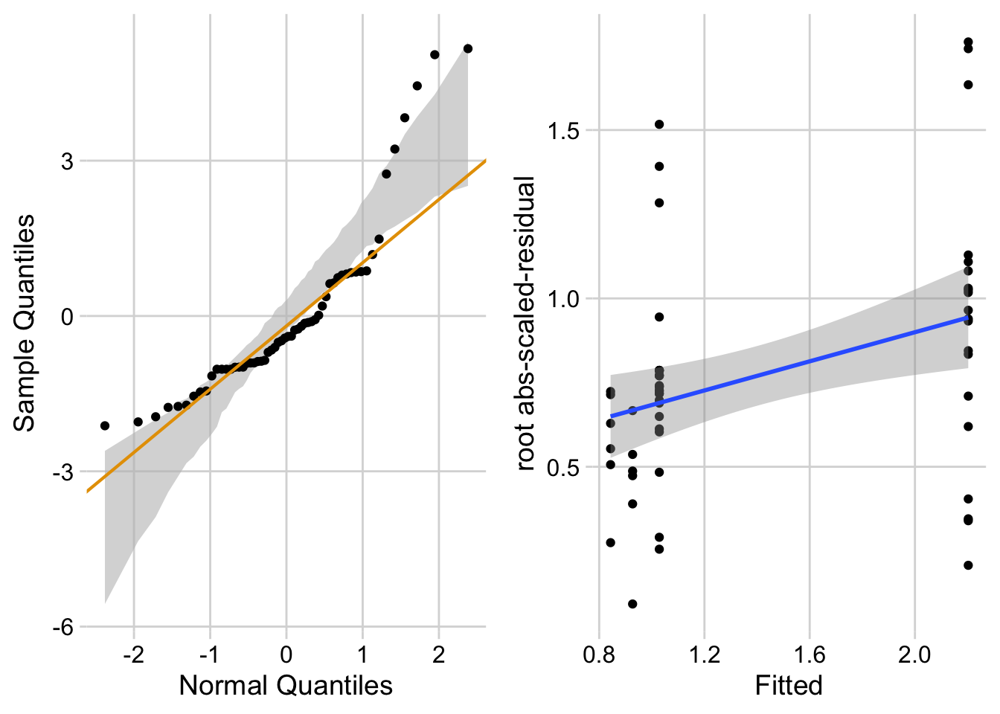
fig3b_m2_check <- simulateResiduals(fittedModel = fig3b_m2, n = 250)
plot(fig3b_m2_check, asFactor = FALSE)
fig3b_m3_check <- simulateResiduals(fittedModel = fig3b_m3,
n = 250)
plot(fig3b_m3_check, asFactor = FALSE)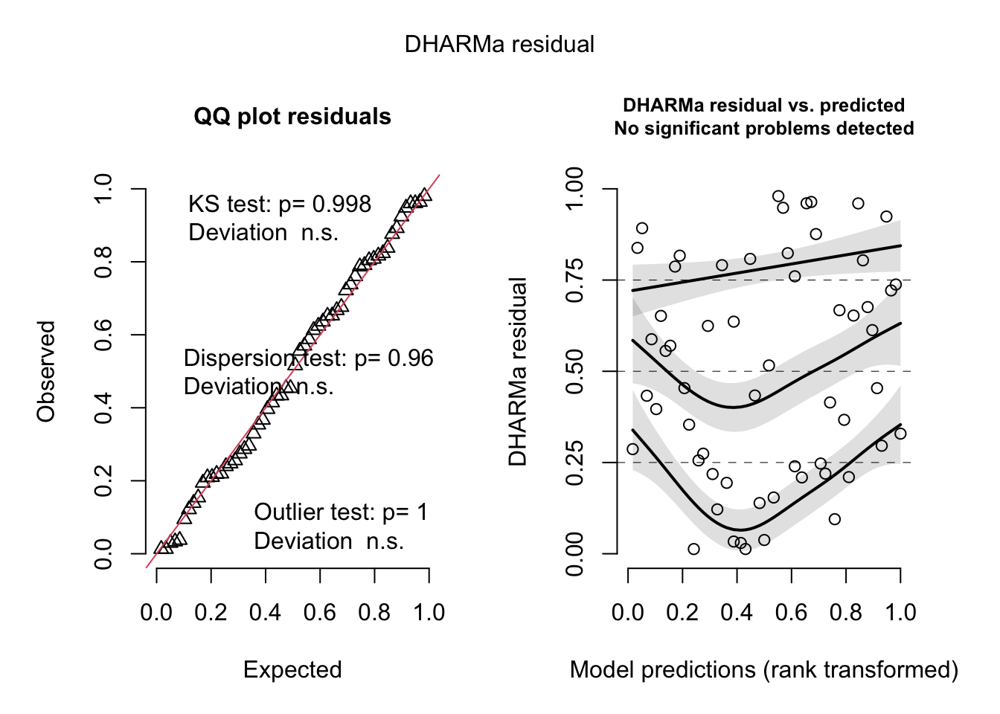
15.4.3.3 Inference from the model
fig3b_m3_coef <- cbind(coef(summary(fig3b_m3)),
confint(fig3b_m3))| Estimate | Std. Error | z value | Pr(>|z|) | 2.5 % | 97.5 % | |
|---|---|---|---|---|---|---|
| (Intercept) | -0.07 | 0.508 | -0.1 | 0.887 | -0.95 | 1.09 |
| ageOld | 0.86 | 0.575 | 1.5 | 0.133 | -0.39 | 1.91 |
| genotypeKI | -0.10 | 0.722 | -0.1 | 0.887 | -1.56 | 1.36 |
| ageOld:genotypeKI | -0.66 | 0.806 | -0.8 | 0.416 | -2.27 | 0.96 |
mean_area <- mean(fig3b[age == "Old" & genotype == "WT",
positive_nuclei])
fig3b_m3_emm <- emmeans(fig3b_m3,
specs = c("age", "genotype"),
type="response",
offset = log(mean_area))| age | genotype | response | SE | df | asymp.LCL | asymp.UCL |
|---|---|---|---|---|---|---|
| Young | WT | 58.20 | 29.6 | Inf | 21.51 | 157.48 |
| Old | WT | 137.86 | 37.0 | Inf | 81.42 | 233.40 |
| Young | KI | 52.53 | 27.0 | Inf | 19.20 | 143.72 |
| Old | KI | 64.57 | 15.3 | Inf | 40.55 | 102.80 |
fig3b_m3_pairs <- contrast(fig3b_m3_emm,
method = "revpairwise") %>%
summary(infer = TRUE)
# fig3b_m3_emm # print in console to get row numbers
# set the mean as the row number from the emmeans table
young_wt <- c(1,0,0,0)
old_wt <- c(0,1,0,0)
young_ki <- c(0,0,1,0)
old_ki <- c(0,0,0,1)
#1. (Young KI) - (Young WT)
#2. (Old KI) - (Old WT)
#3. Interaction
fig3b_m3_planned <- contrast(
fig3b_m3_emm,
method = list(
"(Young KI) - (Young WT)" = c(young_ki - young_wt),
"(Old KI) - (Old WT)" = c(old_ki - old_wt),
"Interaction" = c((old_ki - old_wt) - (young_ki - young_wt))
# "Interaction" = c(old_ki - old_wt) -
# c(young_ki - young_wt)
),
adjust = "none"
) %>%
summary(infer = TRUE)| contrast | ratio | SE | df | asymp.LCL | asymp.UCL | null | z.ratio | p.value |
|---|---|---|---|---|---|---|---|---|
| (Young KI) / (Young WT) | 0.90 | 0.652 | Inf | 0.22 | 3.72 | 1 | -0.14200 | 0.9 |
| (Old KI) / (Old WT) | 0.47 | 0.168 | Inf | 0.23 | 0.95 | 1 | -2.11608 | 0.0 |
| Interaction | 0.52 | 0.418 | Inf | 0.11 | 2.52 | 1 | -0.81353 | 0.4 |
Notes
15.4.3.4 Plot the model
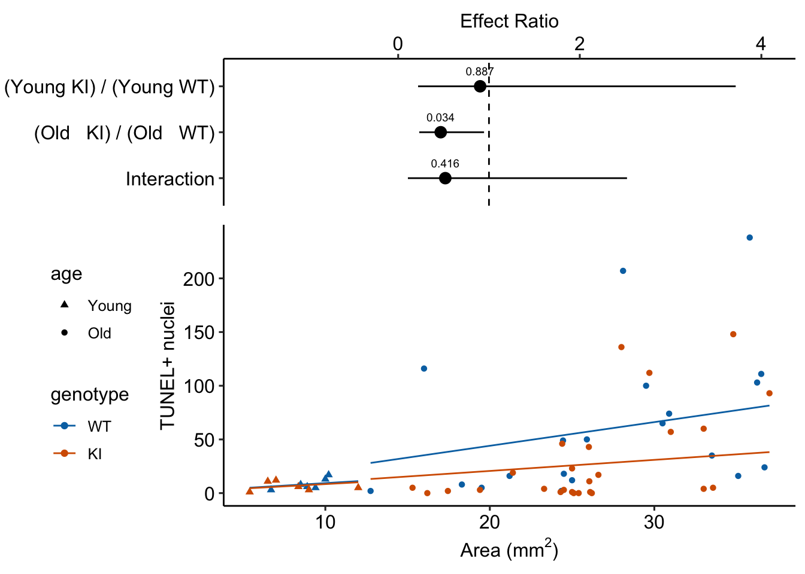
15.5 Understanding Example 2
15.5.1 An offset is an added covariate with a coefficient fixed at 1
The systematic part (the linear predictor) of the Negative Binomial model fit to the fig3b data is
\[ \begin{align} \texttt{positive_nuclei} = \ &\beta_0 + \beta_1 \texttt{age}_\texttt{Old} + \beta_2 \texttt{genotype}_\texttt{KI} \ + \\ &\beta_3 \texttt{age}_\texttt{Old}\texttt{:genotype}_\texttt{KI} \ + \\ &1.0 \times \textrm{log}(\texttt{area_mm2}) \end{align} \]
Notes
- The offset variable is \(\textrm{log}(\texttt{area_mm2})\). An offset is a covariate with a fixed coefficient of 1.0 – this coefficient is not estimated.
- Figure @ref(fig:glm-eg2-fig3b-m3-plot-offset) illustrates the offset on the response and the log scale.
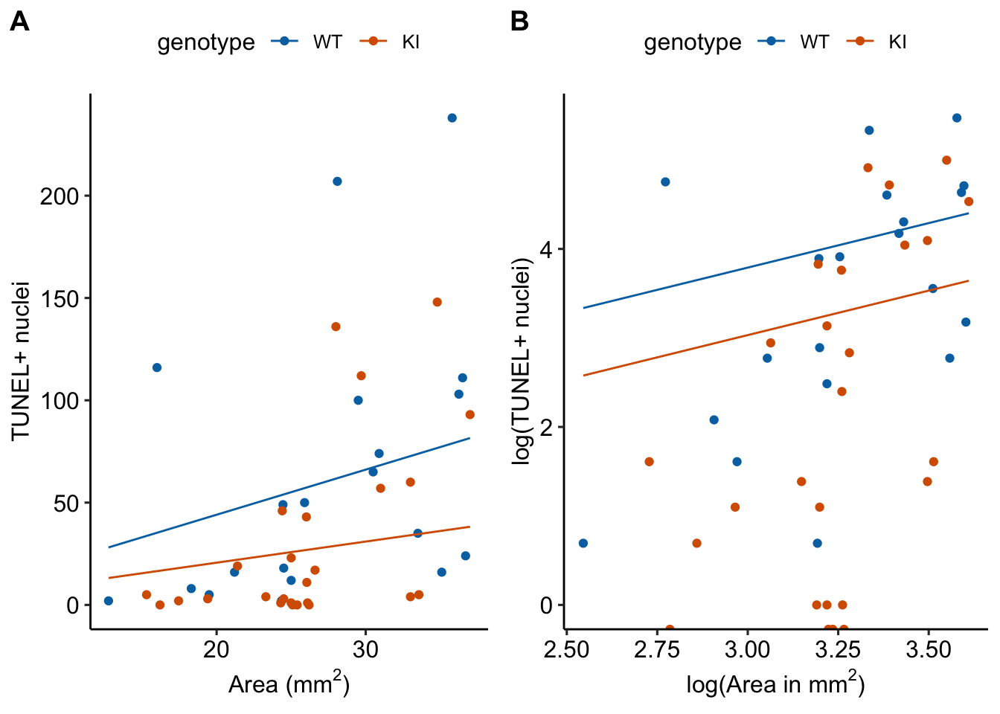
- On the log scale (Figure @ref(fig:glm-eg2-fig3b-m3-plot-offset)B), the offset curves are parallel because each is forced to have a slope of one on the link scale. On the response scale, these curves have different slopes – this slope is \(\mathrm{exp}(b_0)\), that is, the exponent of the intercept on the log scale).
- The plot on the log scale (Figure @ref(fig:glm-eg2-fig3b-m3-plot-offset)B) is easy to misinterpret as a regression with a slope of 1 fit to the log transformed values. It isn’t, because individual values are not transformed in a GLM. I’m specifically referring to this space as the log and not link scale to try to avoid this misinterpretation.
15.5.2 A count GLM with an offset models the area-normalized means
In the t-test or ANOVA of the difference in the area-normalized count of TUNEL+ nuclei, the systematic component of the equivalent linear model is (using only the 20 month old mice for simplicity)
\[ \frac{\mu}{\texttt{area_mm2}} = \beta_0 + \beta_1 \texttt{genotype}_\texttt{KI} \]
where \(\mu\) is the mean response (\(\texttt{positive_nuclei}\)) conditional on the level of genotype. Statisticians typically refer to the ratio \(\frac{\mu}{\texttt{area_mm2}}\) as a rate – here, it is the expected rate of observing a TUNEL+ nucleus as more area is searched.
Let’s compare this to the GLM model recommended here. Recall that the conditional expecation on the link scale is \(\eta\) and, using the inverse link function, \(\mathrm{log}(\mu) = \eta\), the systematic part of the count GLM model with offset is
\[ \begin{align} \eta &= \beta_0 + \beta_1 \texttt{genotype}_\texttt{KI} + \mathrm{log}(\texttt{area_mm2}) \\ \mathrm{log}(\mu) &= \beta_0 + \beta_1 \texttt{genotype}_\texttt{KI} + \mathrm{log}(\texttt{area_mm2}) \\ \mathrm{log}(\mu) - \mathrm{log}(\texttt{area_mm2}) &= \beta_0 + \beta_1 \texttt{genotype}_\texttt{KI} \\ \mathrm{log}(\frac{\mu}{\texttt{area_mm2}}) &= \beta_0 + \beta_1 \texttt{genotype}_\texttt{KI} \\ \frac{\mu}{\texttt{area_mm2}} &= \mathrm{exp}(\beta_0 + \beta_1 \texttt{genotype}_\texttt{KI}) \\ \end{align} \]
That is, the GLM with offset also models the conditional mean of the area-normalized count, but in a way where the data are much more compatible with the assumptions of the statistical model (in the sense that model checks show that the data look like a sample from the statistical model).
If you want the area-normalized means and their uncertainty under the assumptions of the count GLM offset model, here is some code.
mean_area <- mean(fig3b[, area_mm2])
# link scale
# compute rate or normalized count using emmeans
# setting the offset will compute mean at the specified
# value of the offset
# be sure the stats are on the link scale
m3_emm <- emmeans(fig3b_m3,
specs = c("age", "genotype"),
offset = log(mean_area)) %>%
summary() %>%
data.table()
# emmeans is returning the first line in equations above.
# We want the last line. So subtract the log of the offset value.
m3_emm[, log_rate := emmean - log(mean_area)]
# and compute the 95% asymptotic CIs
m3_emm[, log_rate_lcl := log_rate - 1.96*SE]
m3_emm[, log_rate_ucl := log_rate + 1.96*SE]
# m3_emm
# response scale
m3_emm_response <- emmeans(fig3b_m3,
specs = c("age", "genotype"),
offset = log(mean_area),
type = "response") %>%
summary() %>%
data.table()
# replace the mean and CIs with the backtransformed values from the
# link scale table
m3_emm_rates <- m3_emm_response
m3_emm_rates[, response := exp(m3_emm$log_rate)]
m3_emm_rates[, asymp.LCL := exp(m3_emm$log_rate_lcl)]
m3_emm_rates[, asymp.UCL := exp(m3_emm$log_rate_ucl)]| age | genotype | response | SE | df | asymp.LCL | asymp.UCL |
|---|---|---|---|---|---|---|
| Young | WT | 0.93 | 10.79 | Inf | 0.34 | 2.5 |
| Old | WT | 2.20 | 13.52 | Inf | 1.30 | 3.7 |
| Young | KI | 0.84 | 9.85 | Inf | 0.31 | 2.3 |
| Old | KI | 1.03 | 5.59 | Inf | 0.65 | 1.6 |
Notes
- Again, no ratios were computed. The mean area-normalized counts were computed using the coefficients of the GLM. Here, we used the emmeans package to do this. See section xxx below for code that does this withouth the emmeans package.

Notes
- In Panel B, the CIs of the two Young treatment groups have lower bounds that extend below zero. This is absurd – negative area-normalized-count means cannot exist. But this inference is implied by an ANOVA of these data.
- Panel A has the potential to lead to misconceptions because the GLM model with offset is not fit to the area-normalized data but to the raw counts. Regardless, the GLM model with offset is modeling the means of these ratios.
More than I need to know. The modeled means of a count GLM on the link scale are \(\mathbf{X} \mathbf{b}\), where \(\mathbf{X}\) is the model matrix and \(\mathbf{b}\) is the vector of model coefficients. In a model with an offset, the values of the offset variable are not in the model matrix and the coefficient (1.0) is not in the vector of coefficients. Following the math above, this expectation is the modeled mean normalized-count (on the link scale) and not the modeled mean count conditional on some offset value (on the link scale). Again, following the math above, to compute the expected count conditional on some value of the offset, use \(\mathbf{X} \mathbf{b} + \mathrm{log}(offset)\). But we want the rate not the mean, and we want the rate on the response scale, so simply use \(\mathrm{exp}(\mathbf{X} \mathbf{b})\).
# compute rate or normalized count using matrix algebra using
# final line of equations above
b <- coef(fig3b_m3)
X <- model.matrix(fig3b_m3)
fig3b[, rate := exp((X %*% b)[,1])]
# compare rate to area-normalized count
rates <- fig3b[, .(rate_manual = mean(rate),
norm_count = mean(count_per_area)),
by = .(age, genotype)]
m3_emm <- merge(m3_emm_rates, rates, by = c("age", "genotype"))| age | genotype | response | SE | df | asymp.LCL | asymp.UCL | g_by_age | rate_manual | norm_count |
|---|---|---|---|---|---|---|---|---|---|
| Young | WT | 0.9304 | 10.79 | Inf | 0.34 | 2.52 | WT Young | 0.9304 | 0.9269 |
| Young | KI | 0.8397 | 9.85 | Inf | 0.31 | 2.30 | KI Young | 0.8397 | 0.8432 |
| Old | WT | 2.2039 | 13.52 | Inf | 1.30 | 3.73 | WT Old | 2.2039 | 2.2027 |
| Old | KI | 1.0322 | 5.59 | Inf | 0.65 | 1.64 | KI Old | 1.0322 | 1.0284 |
15.5.3 Compare an offset to an added covariate with an estimated coefficient
fig3b_m5 <- glm.nb(positive_nuclei ~ age * genotype +
log(area_mm2),
data = fig3b)Waiting for profiling to be done...| Estimate | Std. Error | z value | Pr(>|z|) | 2.5 % | 97.5 % | |
|---|---|---|---|---|---|---|
| fig3b_m5 (covariate) | ||||||
| (Intercept) | -3.36 | 1.48 | -2.27 | 0.0232 | -6.27 | -0.33 |
| ageOld | -0.67 | 0.89 | -0.75 | 0.4528 | -2.33 | 1.00 |
| genotypeKI | 0.24 | 0.70 | 0.35 | 0.7299 | -1.20 | 1.69 |
| log(area_mm2) | 2.48 | 0.64 | 3.89 | 0.0001 | 1.19 | 3.74 |
| ageOld:genotypeKI | -1.16 | 0.78 | -1.48 | 0.1390 | -2.81 | 0.47 |
| fig3b_m3 (offset) | ||||||
| (Intercept) | -0.07 | 0.51 | -0.14 | 0.8871 | -0.95 | 1.09 |
| ageOld | 0.86 | 0.57 | 1.50 | 0.1334 | -0.39 | 1.91 |
| genotypeKI | -0.10 | 0.72 | -0.14 | 0.8871 | -1.56 | 1.36 |
| ageOld:genotypeKI | -0.66 | 0.81 | -0.81 | 0.4159 | -2.27 | 0.96 |
Notes
- The coefficient table for Model fig3b_m5 has a row for the added covariate \(\texttt{area_mm2}\). This row is absent for Model fig3b_m3 since the coefficient is fixed at 1.0.
- The estimate of the coefficient of \(\texttt{area_mm2}\) in Model fig3b_m5 is 2.48. A value of 1.0 – the value assumed by the offset model or an analysis of the ratio – is not very compatible with the data.
- A coefficient greater than 1.0 means that the rate of DNA damage (the number of TUNEL positive cells per area) increases with the size of the area measured. Does this make any biological sense? The area measured should not have a biological component unless it is a function of the size of the organ. If the area measured is a function of the size of the organ, then we would want to use the ANCOVA model and not the offset model.
- This increase in the rate of TUNEL positive cells is seen in the response-scale plot of the fit model in Figure @ref(fig:glm-fig3b-m5-plot)A, where the slope of the regression line increases as \(\texttt{area_mm2}\) increases.
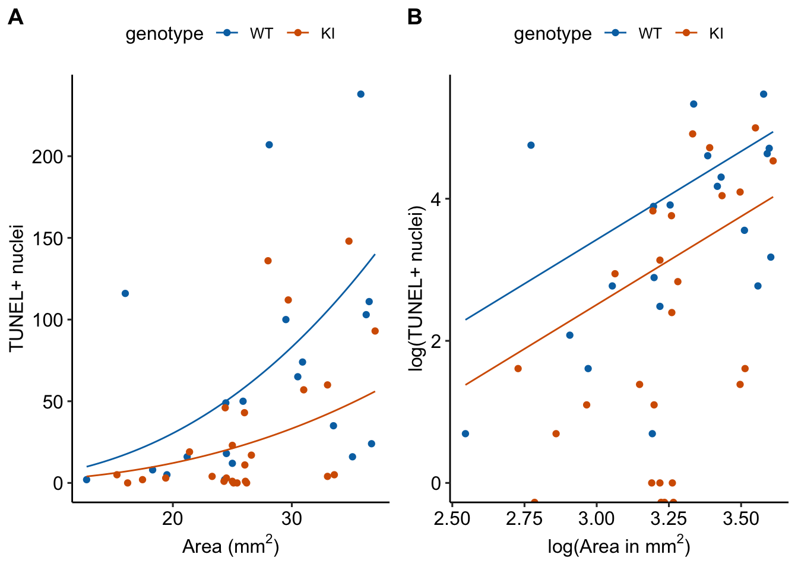
- Note that on the log scale (Figure @ref(fig:glm-fig3b-m5-plot)B), the two regression lines are parallel, as they must be in an ANCOVA linear model.
15.5.4 Issues with plotting
15.6 Example 3 – GLM models for binary responses
15.7 Working in R
15.7.1 Fitting GLMs to count data
The Poisson family is specified with the base R glm() function. For Negative Binomial, use glm.nb from the MASS package
# poisson - less likely to fit to real biological data well
# because of overdispersion
fit <- glm(y ~ treatment, family = "poisson", data = dt)
# two alternatives to overdispersed poisson fit
# quasipoisson
fit <- glm(y ~ treatment, family = "quasipoisson", data=dt)
# note that "family" is not an argument since this function is used only to fit a Negative Binomial distribution!
fit <- glm.nb(y ~ treatment, data = dt)15.7.2 Fitting a GLM to a continuous conditional response with right skew.
The Gamma family is specified with the base R glm() function.
fit <- glm(y ~ treatment, family = Gamma(link = "log"), data = dt)15.7.3 Fitting a GLM to a binary (success or failure, presence or absence, survived or died) response
The binomial family is specified with base R glm() function.
# if the data includes a 0 or 1 for every observation of y
fit <- glm(y ~ treatment, family = "binomial", data = dt)
# if the data includes the frequency of success AND there is a measure of the total n
dt[ , failure := n - success]
fit <- glm(cbind(success, failure) ~ treatment, family = "binomial", data = dt)15.7.4 Fitting Generalized Linear Mixed Models
Generalized linear mixed models are fit with glmer from the lmer package.
# random intercept of factor "id"
fit <- glmer(y ~ treatment + (1|id), family = "poisson", data = dt)
# random intercept and slope of factor "id"
fit <- glmer(y ~ treatment + (treatment|id), family = Gamma(link = "log"), data = dt)
# Again, Negative Binomial uses a special function
fit <- glmer.nb(y ~ treatment + (treatment|id), data = dt)Another good package for GLMMs is glmmTMB from the glmmTMB package
# Negative Binomial
fit <- glmmTMB(y ~ treatment + (1|id), family="nbinom2", data = dt)
# nbinom1, the mean variance relationship is that of quasipoisson
fit <- glmmTMB(y ~ treatment + (1|id), family="nbinom1", data = dt)15.8 Model checking GLMs
The DHARMa package has an excellent set of model checking tools. The DHARMa package uses simulation to generate fake data sampled from the fit model using the function simulateResiduals.
simulation_output <- simulateResiduals(fittedModel = fig3a_nb,
n = 250,
refit = FALSE)simulation_output <- simulateResiduals(fittedModel = fig3a_pois,
n = 250,
refit = FALSE)plot(simulation_output)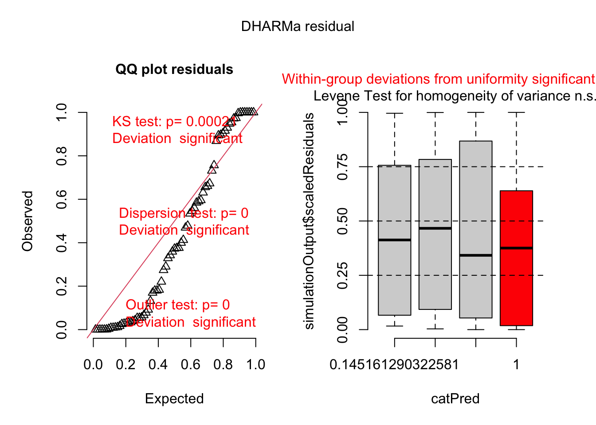
plotQQunif(simulation_output)
Three test statistics are superimposed. Use these p-values cautiously – they are guides and not thresholds of demarcation. The two we care about here are * The KS statistic indicates that the quantile residuals are not very compatible with a Poisson model – think of this as having a very low probability of sampling these counts from a Poisson with the estimated \(\lambda\). * The dispersion statistic indicates that the value of the dispersion of the quantile residuals is not very compatible with a Poisson model – think of this as having a very low probability of sampling counts with this dispersion from a Poisson with the estimated \(\lambda\).